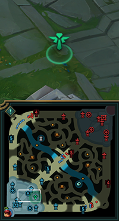

League of Legends（LoL）は、2つのチームが対戦し、相手のネクサスを破壊するオンラインバトルアリーナゲームです。マップの中央には巨大なネクサスがあり、その周りに3つのレーンがあります。
マップの構造について
LoLのマップは3つの主要なレーンと、ジャングルと呼ばれる中立モンスターがいるジャングルエリアがあります。各レーンにはタワーが配置されており、ネクサスを守っています。
始めたばかりの内は見た目が好みのチャンピオンや操作が簡単なチャンピオンを選んで、そのチャンピオンに合ったレーンへ行きましょう
操作が簡単なチャンピオンだと操作になれるのが早く上達しているのが分かりやすいのでお勧めです。
見た目が好みのチャンピオンだとモチベーションを維持しやすいのでおすすめです。自分に合った方法を選びましょう。
操作が難しいチャンピオンを選ぶと操作に慣れないまま敵にボコボコにされる可能性が高いです。（それでも難しいチャンピオンを使いたいのであれば止めませんが…）
LoLでは異なるレーンと役割が存在します。
マップの上からTOP、MID、BOTの３つのレーンと各レーンの間の森のモンスターを倒すJGに分かれています。
BOTはADC(主にダメージを出す人)とSUP（ADCをサポートし、守ったり敵の邪魔をする人）でレーンを共有します。
レベルアップとアビリティの使用について
レーンに流れてくる小さな兵（ミニオン）と森にいるモンスターを倒すと得れる経験値でレベルを上げていきスキルを強化していきます
6レベルになるとアルティメットスキル（ウルト）が獲得可能になります。
最大１８レベルまで上げることが可能です。
LoLはチームでの連携が重要な場面が多くあります。
自分の意思表示をしましょう。
↓ホイールピン↓

CtrlキーまたはAltを押しながら左クリックでピンホイールを開きます。
マウスカーソルをドラッグし選択したピンを指すことが可能です。
最初の内は自分の行きたい場所をピンするところから始めましょう
ピンはマップにも表示されるのでピンの音が鳴ったらマップを見る癖をつけましょう
オールイン
ピン
プッシュ

移動中
後退
視界が必要
手伝って
注意
敵が視界をとっている
敵を見失った
ゲームの進行と重要なオブジェクトについて
試合開始から一定時間後に各レーンの間にある円形の地形に強力なモンスターが出現します。
TOPとMIDの間の円形の地形にはヴォイドクラブ（試合開始5分に出現）とリフトヘラルド（14分に出現）とバロンナッシャー（20分に出現）します。
この3体は相手のタワーを壊すことに適した、バフを獲得可能です。
MIDとBOTの間の円形の地形にはドラゴンが出現します。
4体のドラゴンを倒すと強力なステータスバフが獲得可能です。
また、ドラゴンを２体倒すと地形が変化します。